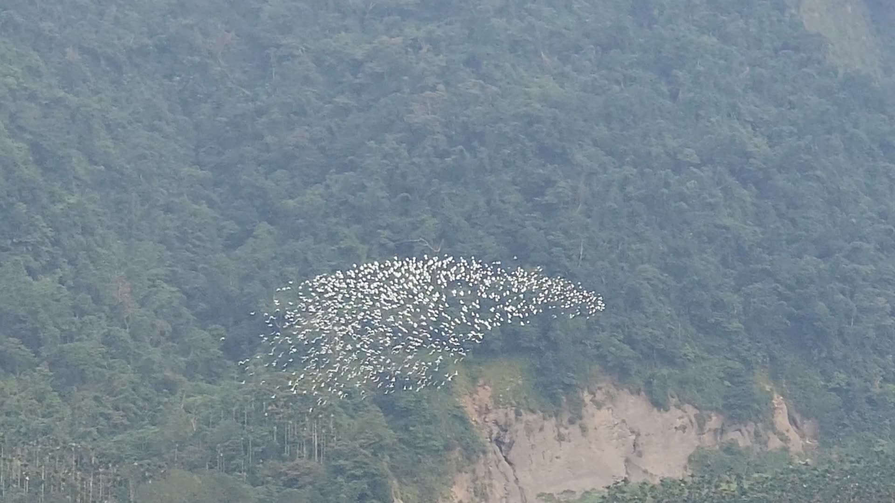
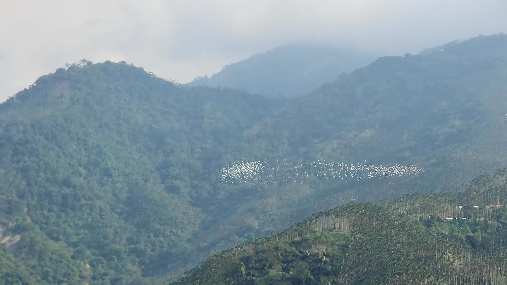

嘉義梅山・太興村 2026 秋季版
萬鷺朝鳳
生態解說手冊
Ten Thousand Egrets — a field companion

從信淳茶居的座位看出去的溪谷。
寫在前面
你今天看到的，
每年秋天，成群的黃頭鷺往南遷徙，途中經過太興村生毛樹溪的溪谷。牠們在溪谷上空盤旋、變換隊形，然後成群翻過山頭，繼續往南。你今天坐在這裡看到的，是牠們長途旅程裡的一小段。
我們一家在太興村種了四十年茶，鳥每年來，我們每年都在。這本手冊把官方機關與研究者查得到的資料，和我們自己在這裡看到的，分開寫清楚；還沒有人知道答案的事，也老實寫出來。內文裡的小數字是出處編號，列在封底。
一個下午的節奏
14:00 前後
第一批鳥陸續出現。導覽在這個時間出發。
15:00–18:00
最壯觀的三個小時。 鳥群一波接一波進到溪谷，盤旋、變換隊形。
18:00 前後
最後一波翻過山頭。這個季節天黑得快，山上也開始涼。
每一年、每一天的鳥況都不一樣，會受天氣影響。這是多數日子的樣子，不是保證。
這本手冊怎麼用
等鳥的時候，讀前半本：黃頭鷺是什麼鳥、為什麼在這裡（第 3–9 頁）。
鳥來了，翻到後半本：怎麼數、怎麼記、怎麼拍（第 10–13 頁）。
回家以後：出處、鳥況查詢與聯絡方式都在封底。
萬鷺朝鳳2
01 萬鷺朝鳳
一件會自己發生的事
每年 8 月到 10 月，成群的黃頭鷺在午後飛越梅山鄉太興村的茶山；依阿里山國家風景區管理處的說法，從白露到雙十節前後最集中1 。 它不是一個蓋好的景點——來對時段看得到，來錯了就是一片安靜的茶山。
名字從哪裡來？當地人把生毛樹溪這一段山谷叫做「鳳凰穴」，有報導形容這裡的山谷地形像鳳凰展翅。每年黃頭鷺成群飛越鳳凰穴，便被稱為「萬鷺朝鳳」2 。

鳥群拉成一條長帶，橫越溪谷對面的山壁。
這條溪 生毛樹溪是清水溪的支流，清水溪再匯入濁水溪3 。
這個村 太興村在梅山鄉東南方，介於太平村與瑞里村之間；茶區海拔約 600–1,000 公尺3 。
有多久了 太興村村長 2018 年受訪時說，黃頭鷺過境這裡已經六、七十年4 。
有多少隻 沒有正式普查。嘉義的生態觀察者蘇家弘長年記錄這群鳥，媒體報導過他單日記到三十二群、逾三萬隻5 。 這是個人的現場計數，不是官方統計。
萬鷺朝鳳3
02 主角
認識黃頭鷺
萬鷺朝鳳的主角是黃頭鷺。在台灣常見的幾種白鷺裡，牠個子最小、身形最粗短：脖子短、頭圓，嘴短而黃12 。
中文名 黃頭鷺（別名牛背鷺）6
英文名 Eastern Cattle Egret
學名 Ardea coromanda 6,7 體長 約 46–56 公分
翼展 約 88–96 公分
體重 約 270–512 公克8
紅皮書 臺灣鳥類紅皮書：暫無危機6
在台灣，牠有四種身分
2026 年的臺灣鳥類名錄，把黃頭鷺同時列為留鳥（不普遍），以及夏候鳥、冬候鳥、過境鳥（都很普遍）7 ： 有些一年到頭都在，有些夏天來繁殖，有些來過冬，還有一大群只是路過——你今天看到的，就是路過的這一群。
1
2
3
4
5
6
7
8
9
10
11
12
繁殖季10
萬鷺朝鳳1
月份條是大略的季節，不是精確起訖；每年會隨天氣前後移動。
2026 年，牠換了學名
黃頭鷺原本被當成牛背鷺 Bubulcus ibis 底下的一個亞種。2023 年起，國際主要的鳥類分類系統把牛背鷺拆成東、西兩種，並把牠們併入大白鷺所在的 Ardea 屬11 ； 臺灣物種名錄在 2026 年 8 月跟進，改列為獨立的一種 Ardea coromanda 6 。舊圖鑑寫 Bubulcus ibis coromandus ，不是寫錯，是當時的分類。拆成兩種的主要依據是繁殖羽與體型量度的差異；目前還沒有同時比較兩者的遺傳研究11 。
萬鷺朝鳳4
03 黃色的頭
「黃頭」只在春夏
秋天飛過太興的鳥群，遠看幾乎是一片白。名字裡的「黃頭」，要看季節。
非繁殖羽 全身白，嘴黃。秋天看到的多半是這個樣子。
繁殖羽 頭、頸、喉、上胸與背上的飾羽轉成橙黃；部分個體嘴基到眼先轉紅。
繁殖季（在台灣大約是 3 到 7 月）10 ， 黃頭鷺頭、頸、喉與上胸的飾羽，還有背上的簑羽，會轉成橙黃色，其餘仍是白色；這段期間，部分個體的嘴基到眼先也會轉紅9 。 繁殖季以外，則是全身白、嘴黃9 。
東方的黃頭鷺，橙黃色一路延伸到臉頰與喉部，色澤更偏金黃；牠西方的親戚橙黃色範圍較小，體型也較嬌小，嘴、脖子、腳都短一些9,11 。
在台灣，牠們在哪裡築巢？
繁殖季的黃頭鷺，常和小白鷺、夜鷺混在同一片樹林裡築巢，就是鄉間常見的「鷺鷥林」10 。
萬鷺朝鳳5
04 白鷺鷥家族
白色的鷺，不只一種
白色的鷺常被統稱「白鷺鷥」，其實台灣常見的至少有四種7 。 看三個地方就分得出來：個子、嘴的顏色、腳12 。
大白鷺
中白鷺
小白鷺
黃頭鷺
剪影只示意大小順序與身形，不是實際比例；畫的是非繁殖期（秋冬）的樣子。
大白鷺 四種裡最大，脖子最長、彎折明顯。嘴黃（繁殖期轉黑），嘴角線一路延伸到眼睛後方。腳黑。
中白鷺 介於大、小白鷺之間。嘴黃、較短，嘴角線大約只到眼睛後緣。腳黑。
小白鷺 嘴黑、腳黑，腳趾卻是黃的，像穿了一雙黃靴子。
黃頭鷺 最小、最粗短，脖子短、頭圓，嘴短而黃。多在草地與農田活動，不太下水。
下次在田裡看到白鷺
在草地、農田、牧場裡跟著牛或機器走的，多半是黃頭鷺；站在溪邊、水裡的，多半是其他白鷺12 。
萬鷺朝鳳6
05 吃什麼
跟著牛吃飯的鳥
黃頭鷺的別名是「牛背鷺」6 ， 英文叫 Cattle Egret，字面上就是「牛的白鷺」。名字跟牠吃飯的方法有關。
牛一走動，草裡的蟲就跳起來
示意圖。
牠們常站在牛的腳邊、甚至牛背上，或跟在翻土的耕耘機後面，等牛走動、機器翻土時被驚起的蟲，一口啄下。主食是昆蟲，尤其蝗蟲、蟋蟀、蒼蠅與蛾，也吃蜘蛛、青蛙和蚯蚓13 。
鳥吃到了蟲，牛大致沒有得失——生物學上有個名字形容這種關係。
片利共生
一方得到好處，另一方大致沒有得失的關係13 。 早在 1965 年，就有研究者專門寫論文探討黃頭鷺跟著牛覓食這件事13 。
萬鷺朝鳳7
06 遷徙
從北方來，往南方去
黃頭鷺在台灣有留鳥、夏候鳥、冬候鳥，也有過境鳥（見第 4 頁）7 。 每年秋天經過太興村的這一大群，屬於最後一種：往南遷徙、路過這裡的鳥。
依阿里山國家風景區管理處的說明，白露時節前後，大批黃頭鷺從北方陸續遷往溫暖的東南亞等地過冬，途中沿著雲林縣古坑鄉樟湖村，進入太興村生毛樹溪的山谷1 。
雲林縣古坑鄉・樟湖
地圖上的「樟湖黃頭鷺觀景台」在這裡，跟太興是兩個地點
嘉義縣梅山鄉太興村・生毛樹溪
你在這裡：鳥群在溪谷上空盤旋、變換隊形
路線不只一條。北部的桃園石門水庫，秋天也看得到成群黃頭鷺飛越；有報導把大漢溪、石門水庫、竹山清水溪、樟湖到太興串成同一條南遷路線14 。 這是觀察者多年目擊拼出來的樣貌，我們還沒有查到繫放或衛星追蹤研究證實。
有報導這樣串起來
大漢溪 → 石門水庫 → 新竹金城湖 → 竹山清水溪・桶頭 → 雲林樟湖 → 生毛樹溪 → 梅山太興
自由時報整理的北部路線14 。 其中「清水溪→生毛樹溪」與溪流的上下游關係一致3 ； 但這是多年目擊拼出來的樣貌，不是追蹤研究的結果。
萬鷺朝鳳8
07 溪谷與風
為什麼在這裡盤旋？
阿里山國家風景區管理處的說明是：鳥群會利用山谷的氣流飛翔、變換隊形，最後成群飛越山峰，繼續南下1 。
生毛樹溪
山谷的氣流
盤旋、變換隊形
成群翻過山頭，繼續往南
示意圖，依阿里山國家風景區管理處的文字說明繪製；比例與方位不代表實際地形。
我們在這裡看了幾十年：鳥群多半直接翻過山頭就走，但會在太興這一段溪谷上空盤旋比較久——這也是這裡好拍、出名的原因。
還沒有答案的問題
為什麼總是在午後？
同一群鳥在溪谷裡繞圈，我們會不會重複數到？
牠們今天從哪裡起飛？翻過山頭之後，今晚會停在哪裡？
我們查過，目前沒有找到研究給出答案。你看到什麼，歡迎告訴我們。
萬鷺朝鳳9
08 看鳥的方法
一大群鳥，怎麼數？
鳥群飛得快，又一直變換隊形，一隻一隻數不完。賞鳥的人常用「分塊估算」15 ：
先盯住鳥群的一小角，數出 10 隻，記住 10 隻「看起來有多大一塊」。
用這個大小，把整群切成一塊一塊，數一數有幾塊。
塊數 × 10，就是估計值。熟練以後，可以改用 50 隻、100 隻當一塊。
10 隻
5 塊 × 10 隻 ≈ 50 隻
訣竅：先把整群掃過一遍再估。鳥群有的地方密、有的地方疏，只看最密的那一角，會估得太多15 。
也看看這些
隊形 ：拉成一條長帶？聚成一團？在同一處打轉？同一群鳥幾分鐘內就會換好幾種。方向 ：從茶居的座位看出去，鳥群一般從左往右飛。一波與一波之間 ：隔多久來下一群？記下時間，你會看出今天的節奏。
萬鷺朝鳳10
09 我的觀察紀錄
今天的鳥
日期 年 月 日
天氣 晴 多雲 陰 小雨 起霧
第一群出現 ：
最後一群離開 ：
一共看到 群
最大的一群 約 隻（ ： ）
隊形 長帶 一團 打轉 其他
一起來的人
把最喜歡的那一刻畫下來
寫事實，不寫評價。「16:40 一群約 300 隻，從左往右」比「很壯觀」有用——明年再翻開，還看得懂。
萬鷺朝鳳11
10 拍照與錄影
想把它帶回家的話
從茶居的座位看出去，就是鳥群每天通過的那段溪谷，視野絕佳；建築旁的電線在畫面的右側和下方，拍照、錄影基本上擋不到，只有鳥飛到很偏的位置，取景才需要稍微避一下。
鳥群一般從左往右飛
電線在畫面的右側與下方：拍鳥群時基本上擋不到
示意圖，依我們在茶居座位的觀察繪製，不是照片。
先等在左邊 ：鏡頭先對著畫面左側，鳥群進來再跟著往右帶，錄影會很順。白鳥別拍成一片白 ：白色的鳥在深綠的山壁前很容易過曝。相機把曝光補償調低 0.7 到 1 格；手機點一下鳥群，再把亮度往下拉一點。用長焦 ：鳥群離座位有一段距離，手機請切到望遠鏡頭，或架個穩一點的支撐。不能飛空拍機 ：縣府公告禁飛，見下一頁。
萬鷺朝鳳12
11 一起看鳥的約定
讓明年的鳥還會再來
林業及自然保育署與中華民國野鳥學會推廣「賞鳥五不」16 。 在這裡看鳥，也照這五條：
驚 不驚嚇 保持距離與安靜
誘 不引誘 不用食物、鳥音
追 不追逐 不跟隨、不驅趕
破 不破壞 不損毀棲地
捕 不捕捉 不捕捉野鳥
賞鳥季禁飛無人機
嘉義縣政府公告：2026 年 9 月 11 日至 10 月 31 日，梅山鄉太興村生毛樹溪溪谷地區、距地表 400 呎以下，禁止遙控無人機飛航；違者處新臺幣 3 萬元以上、15 萬元以下罰鍰17 。 公告的目的，就是避免無人機驚擾遷徙中的鳥群。
天氣與山路
下雨不代表看不到。 季節到了鳥基本上每天都會飛，除非雨下得太大；一般的雨，只要前幾天鳥有飛，那天多半還是會飛經過。帶一件外套。 山上傍晚會涼，而最好看的時段剛好就是傍晚。下山慢慢開。 看完鳥大約傍晚 6 點，這個季節天暗得快，太平的 36 彎請放慢。
萬鷺朝鳳13
12 世界上的黃頭鷺
飛向新大陸的鷺
黃頭鷺這一家很會開拓新地方。兩個有年份可考的故事：
1877
西方的親戚，飛過大西洋
南美洲蓋亞那與蘇利南交界，第一次記錄到西方黃頭鷺。一般認為牠們是自己從非洲飛越大西洋過來的，沒有人為引入的紀錄。1930 年代在當地站穩之後，一路往北擴散到美國佛羅里達，往南到巴塔哥尼亞18 。
1948
東方黃頭鷺，自己飛到澳洲
1933 年，有人從印度引進一批黃頭鷺到西澳野放，很快就消失了。1948 年，澳洲北領地出現數以百計的黃頭鷺——一般認為是牠們自己經由東南亞的島嶼飛過去的，跟那次引進無關18 。
非洲
大西洋
南美洲
1877 首筆紀錄
東南亞島嶼
澳洲北部
1948 數百隻
示意圖，不是地圖；距離與方位不按比例
而在台灣，你今天看到的是另一種移動：年年重複、沿著同一段山谷的秋季南遷。牠們飛了多遠、今晚停在哪裡，我們還沒有查到研究給出答案。
萬鷺朝鳳14
13 人與鳥
大家一起看的鳥
萬鷺朝鳳會被大家知道，是從「梅山太興村賞黃頭鷺景觀平台停車場」和附近幾戶鄰居的觀景平台一起推廣起來的，不是哪一家的功勞。
後來政府單位與媒體陸續報導——我們查得到最早的新聞在 2016 年19 ——加上來過的人自己在網路上分享，才慢慢有名起來。阿里山國家風景區管理處也曾把古坑樟湖與梅山太興並列為同一條路線上的賞鷺點，辦過兩地串聯的活動1 。
我們一家在太興村種了四十年茶。鳥每年來，我們每年都在——這也是為什麼我們講得出哪一天鳥況好、哪個時段別白跑。
抬頭多看兩眼：意外的同行者
2026 年 9 月 17 日上午 7 點半左右，生態觀察者在太興村記錄到 700 多隻赤腹鷹飛越，與黃頭鷺伴飛20 。 這是一次觀察紀錄，還不知道是不是年年都有。
等鳥的下午，大家望著同一片溪谷。
出發前、回家後，都可以問我們鳥況
我們每天都在這裡，網站上的「最近的鳥況」由住在這裡的我們回報，超過兩天沒更新就不會顯示。好的、不好的，都照實寫。
萬鷺朝鳳15
出處
阿里山國家風景區管理處，萬鷺朝鳳相關新聞與活動說明 ali-nsa.net/zh-tw/event/news/2737、news/3157、news/2936、calendardetail/3148鳳凰穴的說法：大紀元（2019/9/18）；自由時報 epochtimes.com/b5/19/9/18/n11529883.htm news.ltn.com.tw/news/life/breakingnews/3689819維基百科〈清水溪 (濁水溪)〉；國家文化記憶庫〈太興茶區〉 zh.wikipedia.org tcmb.culture.tw自由時報（2018/9/22），太興村村長受訪 news.ltn.com.tw/news/lifeweekly/paper/1233951自由時報（2026/9/7） news.ltn.com.tw/news/life/paper/1769719臺灣物種名錄 TaiCOL〈黃頭鷺〉：學名變遷、別名、2024 臺灣鳥類紅皮書等級 taicol.tw/zh-hant/taxon/t0029968中華民國野鳥學會《2026 年臺灣鳥類名錄》 bird.org.tw/basicpage/87Wikipedia, Eastern cattle egret（體型量度） en.wikipedia.org/wiki/Eastern_cattle_egret臺灣生命大百科 TaiEOL；Cornell Lab, Birds of the World：Cattle Egret；農業部農業知識入口網〈黃頭鷺〉 taieol.tw/pages/74148 birdsoftheworld.org kmweb.moa.gov.tw繁殖季與鷺鷥林：台灣環境資訊協會〈黃頭鷺〉；中研院生命科學圖書館〈中研院草坪的黃頭鷺群〉 teia.tw/archives/natural_valley_star/2023-02-01 lsl.sinica.edu.tw/Blog/2022/03/21-2/eBird 2023 Taxonomy Update；South American Classification Committee, Proposal 994 ebird.org/news/2023-taxonomy-update museum.lsu.edu/~Remsen/SACCprop994.htmCornell Lab, All About Birds；Wikipedia, Medium egret、Little egret allaboutbirds.org en.wikipedia.org環境資訊中心；Heatwole, H. (1965). Some aspects of the association of Cattle Egrets with cattle. Animal Behaviour 13: 79–83 e-info.org.tw/node/236674自由時報桃園版，石門水庫的黃頭鷺 news.ltn.com.tw/news/Taoyuan/paper/1768771 news.ltn.com.tw/news/Taoyuan/breakingnews/5557496eBird Help Center, How to Count Birds；eBird, Bird Counting 101 support.ebird.org ebird.org/news/counting-101台灣野灣野生動物保育協會，轉述林業及自然保育署與中華民國野鳥學會推廣的「賞鳥五不」 wildonetaiwan.org/news/869嘉義縣政府公告（民用航空法第 99 條之 13）；自由時報 rhps.cyc.edu.tw/modules/tadnews/index.php?nsn=2592 news.ltn.com.tw/news/life/breakingnews/5567704Wikipedia, Western cattle egret；BirdLife Australia；New Zealand Birds Online；Birds of the World en.wikipedia.org/wiki/Western_cattle_egret birdlife.org.au nzbirdsonline.org.nz自由時報（2016/8/30） news.ltn.com.tw/news/life/breakingnews/1811124聯合新聞網（2026/9/17） udn.com/news/story/7470/9759854
2026 年 9 月初版。自然知識的出處查證於 2026 年 9 月；無人機公告等有期限的規定，請以主管機關最新公告為準。